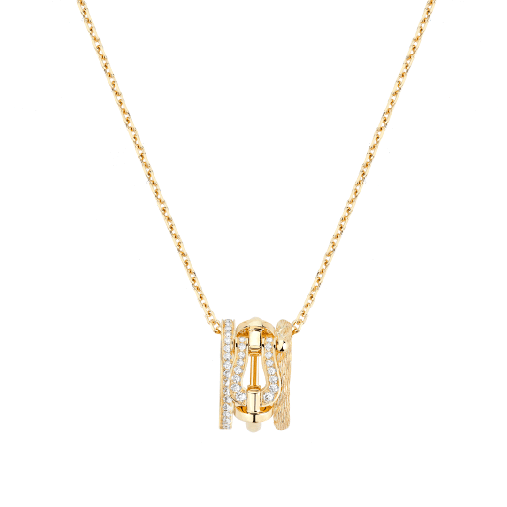

2026 / Most wantedFRED
Force 10 Rise Small Pendant — Yellow Gold and Diamonds
The Force 10 Rise pendant compresses a cable-and-buckle idea into a small, clear shape at the neckline.
US$5,950Explore ↗
US retailer listed reference · snapshot reviewed 20 Oct 2026